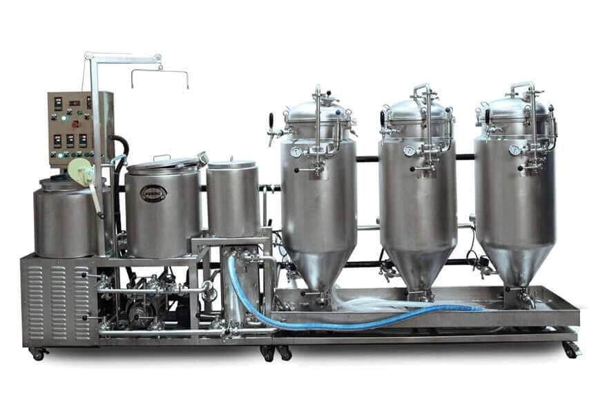

<mat-toolbar class="primaryColor">


       <!-- https://cdn2.iconfinder.com/data/icons/beer-5/92/icon71-08-512.png -->

  <div class="flexEnd"></div>
  <button mat-button type="button"  [routerLink]="['/']" >
    HOME
  </button>
  <button mat-button type="button"  [routerLink]="['/favourite']" >
    FAVORITES
  </button>
</mat-toolbar>